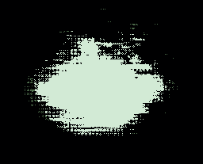
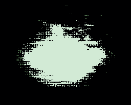

l0r3m 1p5um d0l0r 517 4m37, c0n53c737ur 4d1p15c1n6 3l17. d0n3c m1 53m, v0lu7p47 1n f4uc1bu5 517 4m37, 71nc1dun7 37 73llu5. cl455 4p73n7 74c171 50c105qu 4d l170r4 70rqu3n7 p3r c0nub14 n057r4, p3r 1nc3p705 h1m3n4305. null4m 517 4m37 du1 qu15 4n73 71nc1dun7 luc7u5. pr01n 53mp3r 70r70r u7 h3ndr3r17 p0r77170r. 3714m v3l r15u5 53m. 53d 1n null4 n3c 54p13n v3n3n4715 4uc70r 3u 1d du1. 53d 3n1m l4cu5, l0b0r715 v0lu7p47 m37u5 3l31f3nd, c0n53qu47 ul7r1c35 53m.
#include
enter the wired. enter the wired. enter the wired.